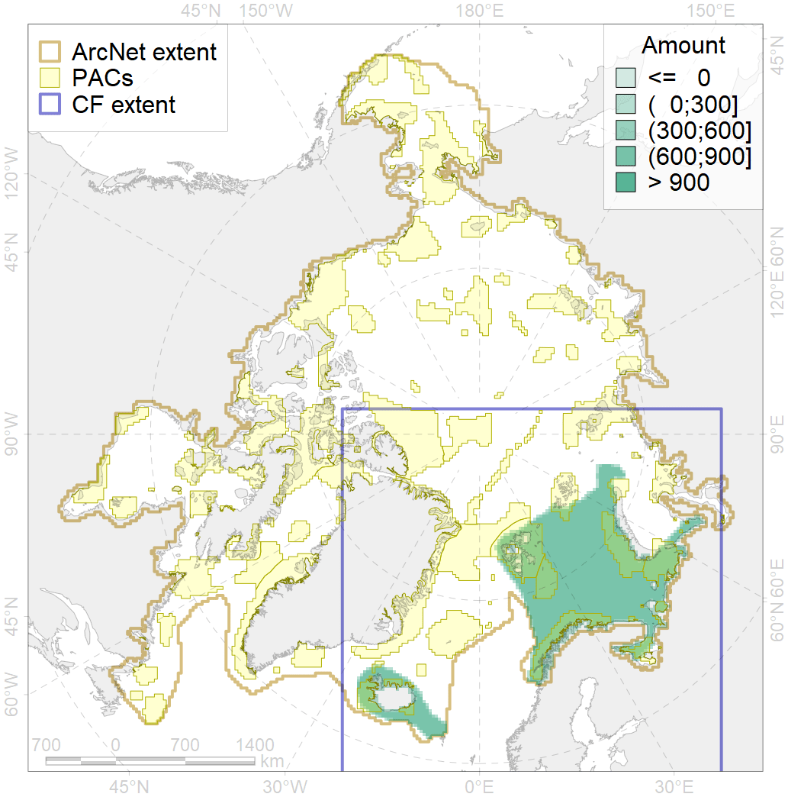
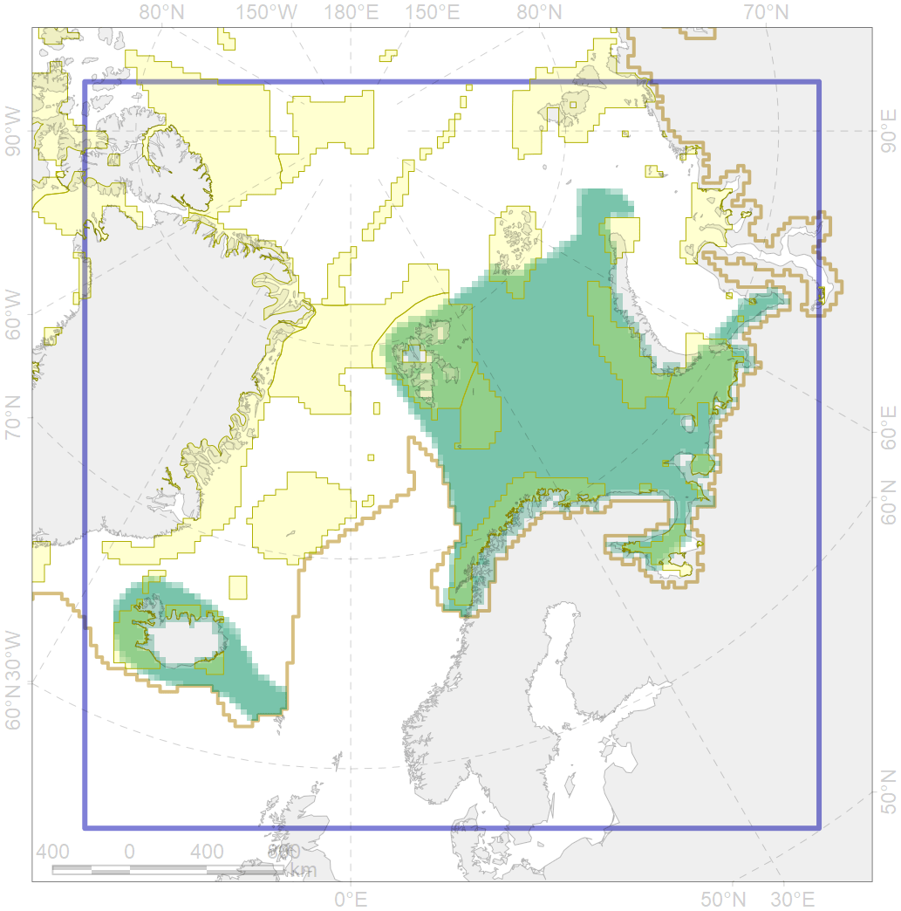

4057

| CF code | 4057 |
| CF name | Range of the American Plaice (Hippoglossoides platessoides), American populations |
| Time Period | 1950-2010s |
| Source(s) | Pethon 2005; Dolgov, 2011; Whienerhoither et al., 2011; Mecklenburg et al., 2018 |
| Seasonality | Jan-Dec |
| Depth Horizon | 0-250 (rare to 1150) |
| Methodology | Compiled from literature sources based on field observations |
| Use Restrictions | Open access |
| Author Name | N. Chernova |
| Notes | |
| Scenario’s Target | 0.03 |
| Target Achievement | 0.332 (Scenario: 1106.2%) |
| PAC | Share of the Total Amount within the PAC | Share of the Target Achievement for the ArcNet | PAC’s Contribution to the Target Achievement |
|---|---|---|---|
| 18 | 0.1%0.1% | 2.0%2.0% | 0.2%0.2% |
| 19 | 0.3% | 9.6% | 0.9% |
| 20 | 4.3%4.6% | 139.4%147.4% | 12.6%13.3% |
| 21 | 5.8%5.9% | 169.1%173.6% | 15.3%15.7% |
| 22 | 0.9% | 26.5% | 2.4% |
| 23 | 0.4%0.5% | 13.0%14.5% | 1.2%1.3% |
| 24 | 0.1%0.2% | 3.3%4.7% | 0.3%0.4% |
| 25 | 0.1%0.2% | 3.8%5.1% | 0.3%0.5% |
| 26 | 1.1%1.3% | 32.8%35.6% | 3.0%3.2% |
| 27 | 5.2%5.9% | 153.0%163.1% | 13.8%14.7% |
| 30 | 6.4%6.7% | 208.9%216.7% | 18.9%19.6% |
| 31 | 3.4%3.7% | 105.7%113.9% | 9.6%10.3% |
| 37 | 0.1%0.2% | 2.1%2.6% | 0.2%0.2% |
| 38 | 2.1%2.3% | 60.0%64.0% | 5.4%5.8% |
| 39 | 0.5%0.5% | 13.8%15.4% | 1.3%1.4% |
| 40 | 0.1%0.1% | 1.8%2.6% | 0.2%0.2% |
| 41 | 0.4%0.5% | 8.8%10.0% | 0.8%0.9% |
| inner | 31.5%33.8% | 953.4%1007.2% | 86.2%91.1% |
| outer | 67.0%71.8% | 152.8%274.2% | 13.8%24.8% |
| † supplement values are for area consistence whereas principal values are for Accenter compatible gridded stats |